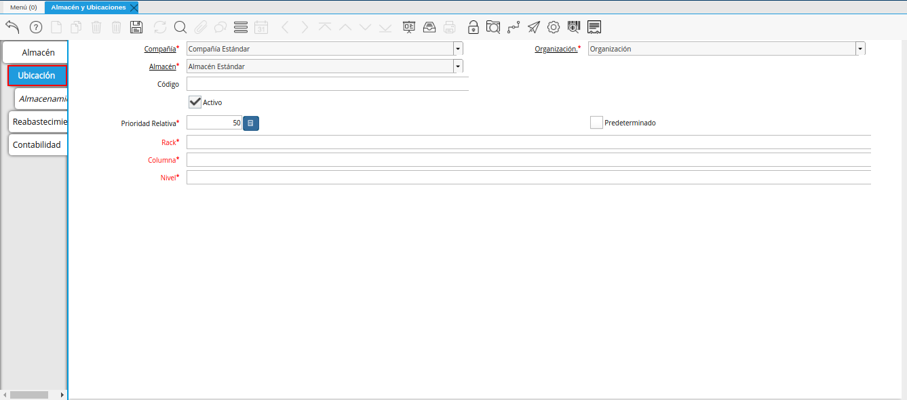
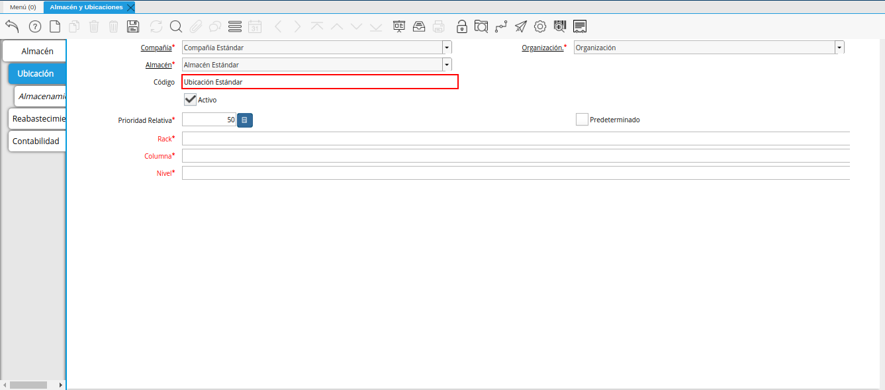

Registro de Almacén¶
Ubique y seleccione en el menú de ADempiere, la carpeta “Gestión de Materiales”, luego seleccione la carpeta “Reglas de Gestión de Materiales”, por último seleccione la ventana “Almacén y Ubicaciones”.
Imagen 1. Menú de ADempiere

Podrá visualizar la ventana “Almacén y Ubicaciones”, con los diferentes registros de almacenes creados en ADempiere con sus respectivas ubicaciones.
Imagen 2. Ventana Almacén y Ubicaciones

Seleccione el icono “Registro Nuevo”, ubicado en la barra de herramientas de ADempiere.
Este icono permite crear un nuevo registro en la ventana, para proceder al llenado de los campos correspondientes.
Imagen 3. Icono Registro Nuevo
En el campo “Organización”, se debe seleccionar la organización para la cual se encuentra creando el registro del almacén.
Imagen 4. Campo Organización
Introduzca en el campo “Código”, el código del almacén que se encuentra registrando.
Imagen 5. Campo Código
Introduzca en el campo “Nombre”, el nombre del almacén que se encuentra registrando.
Imagen 6. Campo Nombre
Introduzca en el campo “Descripción”, una breve descripción del almacén que se encuentra registrando.
Imagen 7. Campo Descripción
Seleccione en el campo “Localización / Dirección”, la dirección de localización del almacén que se encuentra registrando.
Imagen 8. Campo Localización / Dirección
El campo “Separador Elemento de Cuentas”, indica el separador del elemento de las cuentas.
Imagen 9. Campo Separador Elemento de Cuentas
Seleccione en el campo “Almacén Fuente”, el almacén fuente al cual pertence el almacén que se encuentra registrando.
Este campo no es obligatorio y se debe seleccionar solo cuando el almacén en cuestión, posea un almacén fuente.
Imagen 10. Campo Almacén Fuente
Introduzca en el campo “Clase Reabastecimiento”, la clase para el reabastecimiento del almacén que se encuentra registrando.
Imagen 11. Campo Clase Reabastecimiento


Seleccione el icono “Guardar Cambios”, para guardar el registro de los campos de la ventana “Almacén y Ubicaciones”.
Imagen 12. Icono Guardar Cambios
Ubicación¶
Seleccione del lado izquierdo de la ventana “Almacén y Ubicaciones”, la pestaña “Ubicación” y proceda al llenado de los campos correspondientes.

Imagen 13. Pestaña Ubicación
#.Introduzca en el campo “Código”, el código de la ubicación que se encuentra registrando.

Imagen 14. Campo Código
Introduzca en el campo “Prioridad Relativa”, la prioridad relativa del producto.
La prioridad relativa indica la ubicación desde la que se va a seleccionar primero un producto si se encuentra almacenado en más de una ubicación
Imagen 15. Campo Prioridad Relativa
Seleccione el check “Predeterminado”, para indicar que el registro será usado como un valor predeterminado.
Imagen 16. Check Predeterminado
Introduzca en el campo “Rack”, el pasillo donde está localizado el producto.
Imagen 17. Campo Rack
Introduzca en el campo “Columna”, el anaquel donde está localizado el producto.
Imagen 18. Campo Columna
Introduzca en el campo “Nivel”, el nivel donde está localizado el producto.
Imagen 19. Campo Nivel


Seleccione el icono “Guardar Cambios”, para guardar el registro de los campos de la pestaña “Ubicación”, de la ventana “Almacén y Ubicaciones”.
Imagen 20. Icono Guardar Cambios